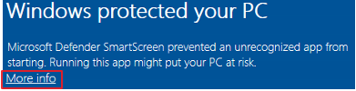

Tutorial associated with this template: https://docs.microsoft.com/en-us/visualstudio/ide/tutorial-3-create-a-matching-game?view=vs-2019
The site demonstrates:VB exe and code files are at the links below:
| Link | Version number and change notes |
| code exe |
v1.00 Original Microsoft template with many comments |
| code exe |
v1.10 A variable is added to count clicks and called in the final message box |
In Chrome on PC, when you download a release above, click "Keep" as shown below:
If you see this message, click "More Info":

And then "Run anyway":

This video was made for the 2020 class and although "Git Changes" now replaces "
Team Explorer", most of the techniques are still valid:
https://youtu.be/YGv8Li3tQfo
The video demonstrates GitHub's ability to compare code between releases and shows that pushing,
pulling and loading releases can be done without any command line code. apologies for the fact that the
cursor is showing not showing in the correct position. For those who want to go straight to the relevant part, here are the timings:
0:00 Overview of GitHub commits
0:50 Releases and comparison of v1.6.0 to 1.6.1
5:00 View the v1.7.0 code with gender validation
6:50 Trying the various combinations of m f M and F, only the F works
8:40 Repair of code
9:00 Team explorer finds the changes
9:20 Commit comment
9:50 Commit
10:30 View latest commit in repository
11:50 Change version # on form (I forgot to tab out of the cell)
12:15 HTML text change
12:55 Push the latest changes to GitHub
13:55 View latest commit in GitHub
14:35 Create another release
16:20 Drag new exe to the publish box
16:45 Run exe from the latest release
17:50 Comparison between v1.7.0 and v1.7.1
18:15 View the latest change to the HTML "index" file
18:35 Finish